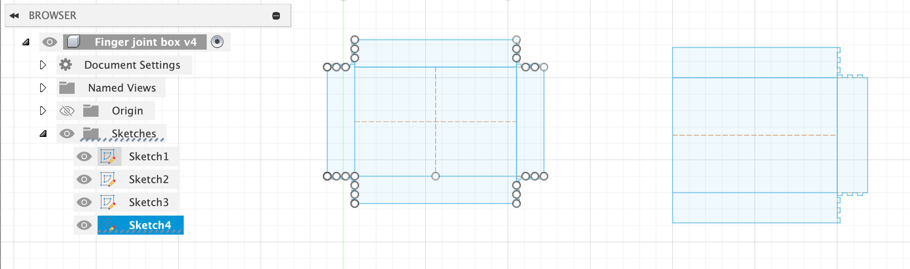
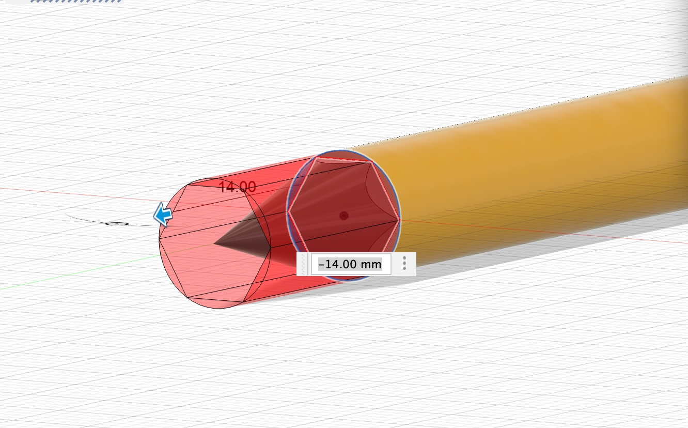
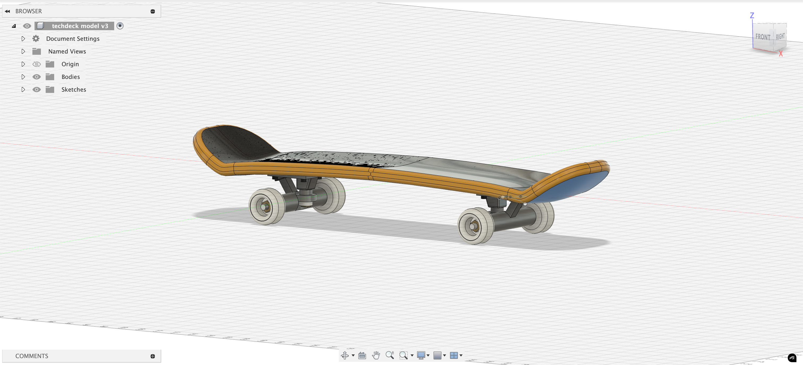

Week 2: 2D Design & Cutting

Assignment 1: Make a Box
I started this process by following the demo video almost to a T, but I used my own dimensions taken from a google search of "average shoebox dimension." This got me to exactly where I thought it would, I had the barebones essentials that I needed to make a box.
But, this is boring. Yes, it will hold all my stuff perfectly well, but what about organization? What about ease of transportation? What about pizzazz???? These were all questions I set out to address in further iterations. In my first foray beyond step-by-step guidance in Fusion was using the center point slot tool (very advanced I know). I used this tool to make oh so glorious handles that I can use to carry my box with less fear that I'm going to drop everything that I hold dear in this class. For the sake of me and everyone around me, I felt that this was an important addition.
This was definitely cool and all, but I was still relatively unimpressed with myself. I felt like there was more that I could do, that there was more to accomplish, that I could drive myself to higher heights. With these lofty goals in mind, I made another, smaller box. This was a previously unfathomed idea - a box inside of a box. It took considerable skill, modifying the dimensions to be fractions of the parameters I used for the big box. But you may ask, Ian why do you want a smaller box? Easy! To hold all my smaller things inside of the box!

After this, I was starting to feel good about myself - I was starting to cook here. Despite what this image suggests, the sides are complete shapes and fully enclosed - Fusion is just having a tough go of it I think. I then went to lab and found out about someone recently crafted a fully functioning, hinged, tackle-style box for this assignment with all kinds of bells and whistles. I began to look for inspiration in the provided sample projects and quickly realized that the idea of handles + small box wasn't exactly an original one... I was feeling defeated. My measly, unoriginal smaller box can't compare to something with attached, moving parts. Then, inspiration struck me. What is the central piece of every toolchest? What is crucial in every garage and mechanics shop? What is ubiquitously loved between carpenters and hobbyist prototypers alike? What does almost every person use on a daily basis?
DRAWERS!!!

With this glorious innovation, I was feeling pretty good about my box. I went through a couple different iterations of this drawer, including making it more integrated into the main box and trying to attach it via magnets. I ended up not integrating it into the main box for structural integrity concerns (this is just cardboard after all), and I figured putting magnets next to a bunch of electronics and small metal parts might result in headaches later down the line. Because of that, I settled on this simpler design where I will glue the drawer housing onto the bottom of the main box, and then the drawer itself is yet another smaller box that can slide in and out of the housing, resulting in a pretty sweet drawer.
The next step was to take it to the laser cutter and actually start knocking things out. There were some initial snags like using a template that was correctly named but that someone had messed with (shoutout Bobby and Kassia for figuring this out) resulting in the scoring process taking forever to do. I also forgot to account for the fact that humans with hot glue guns do not result in perfect tolerances (obviously), so I did have to resize and reprint some of my components to make sure that everything fit. My other tolerances and accounting for kerf was flawless though.

I really liked that I used the scoring to fold the sides up - I thought that was part of the assignment but no one else was doing it, so I felt extra cool. It looks nice to me, idk. The main issue that I had was attaching the drawer to the main box. Because it was missing a front piece (to allow for the drawer to slide in and out), there wasn't as much pull pulling it to be perfectly square. Also, imperfections in the scoring process on the laser cutter resulted in different depths of scoring, which led to the sides not folding up exactly evenly on both sides. This is all to say that I had to print the drawer itself a couple times, and the fit for the drawer housing is far from perfect, but I like how it turned out. You really only notice the major imperfections if you are looking for it, like how the housing isnt perfectly level, and the issues that you do notice are small, like the fact that the seam with the hot glue isn't gorgeous. However, the small box fits perfectly into the bigger box and will be ideal to store all of my small components in, and the glorious drawer does actually work really well now. After I glued a spacer onto the front of the drawer to act as the handle, you can easily move the drawer in and out of the box itself, giving me another easy way to store more materials. The drawer will be espescially useful for things that I really dont want to be crushed. And the handles of course were great - grippy, grabby, holdy, all of the above. Overall, I am happy with how this turned out! I took some pictures in the photo box to show her off in her true glory.
Assignment 2: Fusion 360 Tutorial
A couple images of my soda bottle that I made
following this tutorial:
Front view, made with green glass texture
Bottom view
Top view
Assignment 3: Fusion Modeling
I now needed to decide what I wanted to model with my own two hands and some snazzy calipers. At this point, I am potentially leaning towards making two tablet-esque things for my final project that have the ability to communicate long distance with each other and show in real time when someone writes something on one. I think this would be a sweet way of staying in touch with loved ones when I am super far away in Alaska. Initially, I was like maybe I could model my iPad or something like that, but as much as I'm sure you all would love to see me model a rectangular prism with rounded edges, I decided against it. Instead, I decided to model the other most important aspect of a tablet to be written on - a pencil! I figure the pencil I make will eventually be stuffed full with some electronics or sensors or something, so it may end up a bit fatter than a normal number 2 pencil, but I can always go back in the timeline and beef it up if need be. With this in mind, and having made a glass bottle, I figured I could crank out a pencil pretty easily. The whole process was honestly pretty straight forward, and it came out great.
The inscribed polygon tool was my friend for making the bulk of this pencil, and it was obviously used to make the body.

Less obviously though, it also helped me cut into the cone that I drew for the tip of the pencil to ensure that it looked continuous and like how a pencil looks with those weird fringe things at the tip. I thought this was a neat little trick, and I definitely kept it in mind for the second thing that I modeled. I also used a projected plane to separate the tip of the cone from the body of the cone to delineate between the wood and the graphite, which I thought was pretty neat. I found that to be an effective method of splitting a body, which seems like a useful thing to know how to do.
The rest of the eraser building was pretty straight forward, it was just a series of extruded circles with filleting. The most challenging part was definitely getting all of the measurements down nice and accurate to make it as close to the original pencil as possible. I also had fun coloring everything! I was pretty happy with how the final product turned out and how close it was to the original:
All in all, I thought this was a successful first independent foray into Fusion, and I thought it was super cool that I was able to make something from real life in such detail exist on my computer!
Naively feeling emboldened by my successful, straight, normal polygon based modeling attempt, I was debating what I should model next. Sitting in my room, I reached for one of my favorite fidget toys, and did what anyone would do when they needed to really introspect and deeply ponder - rip sick kickflips on my tech deck from ~2009. After landing a steezy shovit, inspiration struck me, and my confidence told me that I should model this very tech deck. This fateful decision led to a 4+ hour oddysey of me painstakingly figuring out how to bend Fusion to my will and craft this oddly shaped, multi-demensional object. I'm sure this timeline looks wimpy and pitiful compared to many of the projects that y'all have worked on, but seriously look at this and realize that the only things that I modeled prior to this were two boxes, a bottle, and a pencil.
My first large breakthrough in the process that made me think that this was possible was the discovery of the sweep tool. This, combined with my knowledge that I would eventually use the mirror tool, allowed me to profile out exactly one half of the board. Once I measured to the best of my abilities all of the funky curvature in the board, I curved, splined, and swept until I got a crude shape of half of the board. Some tactical filleting and a mirror tool usage later, and I had a glorious skateboard! Well, at least the deck...

I really thought I was cooking once I figured all of that out, and then I flipped the board over and started critically looking at the trucks and wheel area, and realized that I didn't know how to do like half of the required steps. Regardless, I was determined to learn and do my best at getting it pretty damn accurate. Honestly, the steps were relatively unimpressive all things considered, but I did learn how to do a sweep that created a body that didn't require me to use the thicken tool afterwards, and I used the sweep tool in a clever way to extrude a rectangle at an angle. I also had some other clever realizations like using the pencil trick to carve out a section of the truck for the bolt to lay in, but most of the work that I did was just measuring all of the little components on my tech deck and doing my best to recreate each little step and difference in size. Below are a whole bunch of pictures because I think this turned out pretty damn well and feel like you should be forced to appreciate the effort that I put into it. I also added pretty colors to match (to the best of my ability) my tech deck.

I honestly was very happy with how this turned out, even though its not exactly perfect. I feel like this was a successful first foray into more complex modeling in Fusion!
Finally, I combined these two into one glorious creation. What you see now is my epic tech deck doing a sick tail grind down the pencil, very akin to what it looked like when inspiration struck. I hope gazing at this image gives you the same confidence and inspiration as it did me.